Xing Ce Work · 听课配套讲义
《资料分析：比重系列 核心错题》
2027公考行测 · 听课配套专属讲义 · 资料分析模块
导师寄语：听课三条纪律
- 严禁只记ABCD：每一道题必须在下方笔记区写明“特征识别”与“排错理由”，写不出理由算没做。
- 结合视频课程：听课时把老师的思维切入点、定位顺序和列式思路记录在笔记区，与自己的错因对照。
- 图片缺失不慌：若题干配图未显示，请查阅原题库 JSON 对应编号，或对照书籍原页码。
本讲义依据《三科易错板块与看课重点（2026-09-26）》优先板块生成，共收录 40 道核心错题；严禁在题面上直接抄写答案选项。
资料分析：比重系列 核心错题 · 共 40 题
【题目编号/题号】 ZL004 (20-18)书本第 19 20 页
【考点标签】 现期比重；统计表
【材料】（无文本材料，见题干配图）
【题干】
2019年，除其他类外，排名前五的细分市场销售额之和约占全球医疗器械销售总额的：
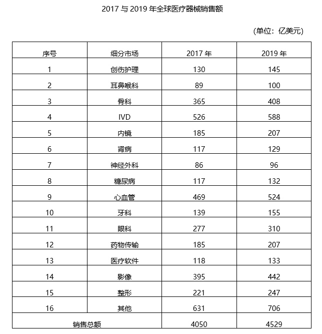
【选项】
A35.5%
B40.0%
C45.6%
D50.2%
听课笔记 / 决策路径：
【题目编号/题号】 ZL009 (35-12)书本第 34 35 页
【考点标签】 现期比重；统计表
【材料】（无文本材料，见题干配图）
【题干】
2024年4月，我国东部地区移动电话用户数合计占全国比重在以下哪个范围内？
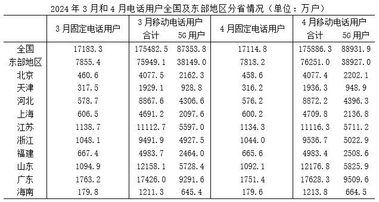
【选项】
A40%以下
B40%~42%之间
C42%~44%之间
D44%以上
听课笔记 / 决策路径：
【题目编号/题号】 ZL013 (41-12)书本第 40 41 页
【考点标签】 两期比重；统计表
【材料】（无文本材料，见题干配图）
【题干】
2024年上半年，中药提取物出口额占医药保健品出口总额的比重比上年同期：
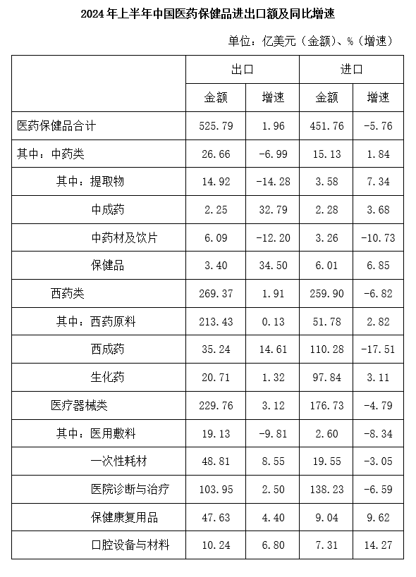
【选项】
A上升了3个百分点以上
B下降了3个百分点以上
C上升了不到3个百分点
D下降了不到3个百分点
听课笔记 / 决策路径：
【题目编号/题号】 ZL014 (46-7)书本第 45 46 页
【考点标签】 基期比重；统计表
【材料】（无文本材料，见题干配图）
【题干】
以下哪个项目2020年12月占全年比例最低？
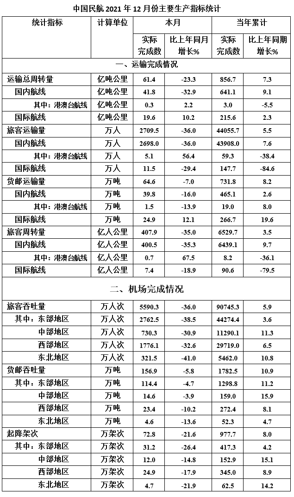
【选项】
A运输总周转量国际航线
B旅客运输量国际航线
C货邮运输量国内航线
D旅客周转量港澳台航线
听课笔记 / 决策路径：
【题目编号/题号】 ZL015 (46-9)书本第 45 46 页
【考点标签】 两期比重；统计表
【材料】（无文本材料，见题干配图）
【题干】
起降架次当年累计数东部地区占比，2021年比2020年：
【选项】
A低1个多点
B低3个多点
C高1个多点
D高3个多点
听课笔记 / 决策路径：
【题目编号/题号】 ZL033 (84-3)书本第 83 84 页
【考点标签】 现期比重；文字资料
【材料】
2023年上半年，全国新注册登记机动车1688万辆，同比增长1.9%。新注册登记汽车1175万辆，同比增长 5.8%。其中，新注册登记载客汽车1034万辆，同比增长5.6%；新注册登记载货汽车133万辆，同比增长8.1%。 新注册登记新能源汽车313万辆，同比增长41.6%。 2023年上半年，全国办理机动车转让登记业务1134万辆。其中，办理汽车转让登记业务1057万辆，同比增 长5.3%；异地直接办理交易登记二手小客车157万辆。 2023年6月末，全国机动车保有量4.26亿辆，同比增长4.9%。其中，汽车3.28亿辆，同比增长5.8%；新能源 汽车1620万辆，同比增长61.8%。新能源汽车中，纯电动汽车保有量1259万辆，同比增长55.4%；2023年6月 末，全国机动车驾驶人为5.13亿人，同比增长4.3%。其中，汽车驾驶人4.75亿人，同比增长4.6%。2023年上半 年，全国新领证驾驶人1191万人，同比增长8.0%。 2023年6月末，全国有88个城市汽车保有量超过100万辆，同比增加7个城市。其中，41个城市超过200万 辆，24个城市超过300万辆，3个城市超过500万辆，2个城市超过600万辆。
【题干】
2023年6月末，新能源汽车保有量占汽车保有量的比重，比当年上半年新注册登记新能源汽车数量占新注册登记汽车数量的比重约低多少个百分点？
【选项】
A12
B17
C22
D27 据对全国6.4万家规模以上文化及相关产业企业调查，
听课笔记 / 决策路径：
【题目编号/题号】 ZL037 (92-13)书本第 92 页
【考点标签】 基期比重；文字资料
【材料】
2022年，规模以上工业企业实现营业收入137.91万亿元，同比增长5.9％；发生营业成本116.84万亿元，同 比增长7.1％；营业收入利润率为6.09％，同比下降0.64个百分点。 2022年，规模以上工业企业中，分行业看：采矿业实现利润总额15573.6亿元，同比增长48.6％；制造业实 现利润总额64150.2亿元，同比下降13.4％；电力、热力、燃气及水生产和供应业实现利润总额4314.7亿元，同 比增长41.8％。 2022年，在41个工业大类行业中，利润总额由高到低的前十个行业的利润情况如下：煤炭开采和洗选业实 现利润总额10202亿元，同比增长44.3％；计算机、通信和其他电子设备制造业实现利润总额7389.5亿元，同比 下降13.1％；化学原料和化学制品制造业实现利润总额7302.6亿元，同比下降8.7％；电气机械和器材制造业实 现利润总额5915.6亿元，同比增长31.2％；汽车制造业实现利润总额5319.6亿元，同比增长0.6％；非金属矿物 制品业实现利润总额4759亿元，同比下降15.5％；医药制造业实现利润总额4288.7亿元，同比下降31.8％；石油 和天然气开采业实现利润总额3545亿元，同比增长109.8％；通用设备制造业实现利润总额3250.3亿元，同比增 长0.4％；电力、热力生产和供应业实现利润总额3154亿元，同比增长86.3％。
【题干】
2021年，石油和天然气开采业利润总额占采矿业利润总额的（ ）。
【选项】
A不足10%
B10%-20%之间
C20%-30%之间
D30%以上
听课笔记 / 决策路径：
【题目编号/题号】 ZL038 (94-19)书本第 94 页
【考点标签】 现期比重；文字资料
【材料】
2020年全国人口共141178万人，比2010年增长了约5.38%。从地区分布上看，2020年东部地区人口占 39.93%，中部地区占25.83%，西部地区占27.12%，东北地区占6.98%。与2010年相比，东部地区人口所占比重 上升2.15个百分点，中部地区下降0.79个百分点，西部地区上升0.22个百分点，东北地区下降1.20个百分点。 从性别构成上看，2020年男性人口为72334万人，女性人口为68844万人。从年龄构成上看，2020年0-14岁 人口为25338万人，15-59岁人口为89438万人，60岁及以上人口为26402万人（其中，65岁及以上人口为19064 万人）。从城乡分布上看，2020年居住在城镇的人口为90199万人，居住在乡村的人口为50979万人，与2010年 相比，城镇人口增加23642万人，乡村人口减少16436万人。从民族构成上看，2020年汉族人口为128631万人， 各少数民族人口为12547万人，与2010年相比，汉族人口增长4.93%，各少数民族人口增长10.26%，少数民族人 口比重上升0.40个百分点。
【题干】
2020年，65岁及以上人口占比与60-64岁人口占比相差：
【选项】
A约6.3%
B约7.3%
C约8.3%
D约9.3%
听课笔记 / 决策路径：
【题目编号/题号】 ZL039 (96-8)书本第 95 96 页
【考点标签】 基期比重；文字资料
【材料】
2019年6月，全国发行地方政府债券8996亿元，同比增长68.37%，环比增长195.63%。其中，发行一般债券 3178亿元，同比减少28.33%，环比增长117.08%，发行专项债券5818亿元，同比增长540.04%，环比增长 268.46%；按用途划分，发行新增债券7170亿元，同比增长127.11%，环比增长332.71%，发行置换债券和再融 资债券1826亿元，同比减少16.47%，环比增长31.75%。 2019年6月，地方政府债券平均发行期限11.1年，其中新增债券10.4年，置换债券和再融资债券13.4年；地 方政府债券平均发行利率3.55%，其中新增债券3.52%，置换债券和再融资债券3.65%。 2019年1至6月，全国发行地方政府债券28372亿元，同比增长101.09%。其中，发行一般债券12858亿元， 同比增长23.21%，发行专项债券15514亿元，同比增长322.38%；按用途划分，发行新增债券21765亿元，同比 增长553.80%，发行置换债券和再融资债券6607亿元，同比减少38.71%。 2019年1至6月，地方政府债券平均发行期限9.3年，其中一般债券11.2年，专项债券7.8年；地方政府债券平 均发行利率3.47%，其中一般债券3.53%，专项债券3.43%。 2019年全国地方政府债务限额为240774.3亿元。其中，一般债务限额133089.22亿元，专项债务限额 107685.08亿元。截至2019年6月末，全国地方政府债务余额205477亿元，其中，一般债务118397亿元，专项债 务87080亿元。
【题干】
2018年1至6月，发行一般债券的占比较发行专项债券的占比约：
【选项】
A低9.36%
B低52.81%
C高47.93%
D高53.43%
听课笔记 / 决策路径：
【题目编号/题号】 ZL043 (104-17)书本第 104 页
【考点标签】 两期比重；文字资料
【材料】
2017年全国海洋生产总值77611亿元，比上年增长6.9%，海洋生产总值占国内生产总值的9.4%。 2017年，J省海洋生产总值为7217亿元，比上年增长9.2%，海洋生产总值占地区生产总值的8.4%，2017 年，全省沿海沿江港口完成货物吞吐量20.4亿吨，同比增长8.3%；集装箱吞吐量1698.8万标箱，同比增长 5.5%。 2017年，J省造船完工量为1412.4万载重吨，同比下降5.4%；新承订单量为1393.4万载重吨，同比增长 228.5%；手持订单量为3662.3万载重吨，同比下降6.4%，分别占全国份额的33.1%、41.3%和42.0%。 2017年，J省沿海三市接待国内游客10558.01万人次，同比增长12.6%；接待入境过夜旅游者27.65万人次， 同比增长8.1%。 2017年，J省实现海水养殖产量93.1万吨，同比增长3%；海洋捕捞产量53万吨，同比下降3.4%；远洋渔业 产量2.9万吨，同比增长43.3%。 2017年，J省海工装备产值同比增长6.9%。全省沿海地区风电装机容量达到589.7万千瓦，同比增长16.6%； 海上风电装机容量达到162.5万千瓦，同比增长46.3%。2017年，全省完成海水淡化产量1.31万吨，同比增长 7.4%。
【题干】
2017年J省海洋生产总值占全国的比重比上年：
【选项】
A上升了约0.2个百分点
B上升了约2个百分点
C下降了约0.2个百分点
D下降了约2个百分点
听课笔记 / 决策路径：
【题目编号/题号】 ZL049 (117-6)书本第 117 页
【考点标签】 两期比重；文字资料
【材料】
2023年，我国互联网企业完成互联网业务收入17483亿元，同比增长6.8%。实现利润总额1295亿元，同比 增长0.5%。共投入研发经费943.2亿元，同比下降3.7%。 2023年，东部地区互联网企业完成互联网业务收入15608亿元，同比增长7.3%；中部地区互联网企业完成 互联网业务收入781.6亿元，同比增长8.1%；西部地区互联网企业完成互联网业务收入1054亿元，同比增长 0.2%；东北地区互联网企业完成互联网业务收入39.4亿元，同比下降25.1%。 2023年，京津冀地区互联网企业完成互联网业务收入6777亿元，同比增长6.4%；长三角地区（上海、浙 江、江苏和安徽）互联网企业完成互联网业务收入6624亿元，同比增长12.9%。 2023年，互联网企业互联网业务累计收入居前5名的省级行政区为北京（5721.4亿元，增长4.2%）、上海 （4167.8亿元，增长17.5%）、浙江（1955.9亿元，增长4.8%）、广东（1754.5亿元，下降4.6%）和天津（981.7 亿元，增长20.3%）。全国互联网企业互联网业务增速实现正增长的省级行政区有16个，数量较2022年全年增 长3个。
【题干】
2023年，我国互联网企业投入的研发经费占业务收入的比重比上年下降了约多少个百分点？
听课笔记 / 决策路径：
【题目编号/题号】 ZL053 (122-8)书本第 122 123 页
【考点标签】 现期比重；文字资料
【材料】
2024年，我国对联合国定义的45个最不发达国家（以下简称最不发达国家）进出口14230.2亿元人民币，占 同期我国外贸进出口总值的3.2%。其中出口8664.6亿元，同比（下同）增长4.3%；进口5565.5亿元，增长 12.8%。 2024年，我国对最不发达国家出口机电产品3942.2亿元，增长13.5%。其中出口船舶690.8亿元，增长 65.9%，主要出口至全球第一大船旗国利比里亚。出口金额654.3亿元，增长67%；出口工程机械、火车分别为 165.3亿元、91.6亿元，分别增长28.9%、39.5%；出口劳动密集型产品2481亿元，增长3.7%，其中纺织品1623.5 亿元，增长15.3%。 2024年，我国自最不发达国家进口铜材、原油、金属矿砂分别为1469.6亿元、1364.2亿元、1221亿元。最 不发达国家成为我国钢材、铝矿、锡矿、钨矿、钛矿第一大进口来源地，分别占我国同类商品进口总值的 38.2%，73.1%，65.4%，57.7%，58.1%。 2024年12月1日起，我国给予所有已建交的最不发达国家100%税目产品零关税待遇。12月，我国自最不发 达国家进口512.7亿元，增长18.1%，其中自刚果民主共和国、几内亚、老挝、赞比亚分别进口156.3亿元，54.7 亿元，35.6亿元，33.9亿元，分别增长84.6%，40.3%，25.7%、127.27%。
【题干】
下列饼状图，最能准确反映2024年我国自最不发达国家进口值中，铜材（黑色），原油（横线），金属矿砂（白色）和其他（竖线）进口值占比关系的是：
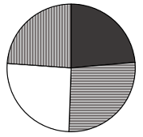
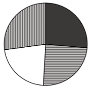
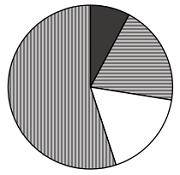
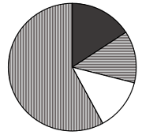
听课笔记 / 决策路径：
【题目编号/题号】 ZL054 (124-13)书本第 123 124 页
【考点标签】 文字资料；现期比重
【材料】
2016年4月，保监会机关及各保监局共接收各类涉及保险消费者权益的有效投诉总量为2989件，同比上升 43.15%，环比上升24.44%。其中，接收保险公司投诉2980件，其他非保险公司投诉9件。接收保险公司投诉 中，涉及保险公司合同纠纷类投诉2721件；涉嫌保险公司违法违规类投诉259件。 所接收的2980件保险公司投诉中，财产险公司的投诉为1510件。其中，投诉量位居前10的财产险公司的投 诉总和占投诉所有公司投诉总量的78.68%。人身险公司的投诉为1470件。其中，投诉量位居前10的人身险公司 的投诉量总和占所有公司投诉总量的85.37%。另外，人身险涉及保险合同纠纷的投诉有1281件，其中销售纠纷 481件，理赔纠纷357件，保全纠纷237件。
【题干】
2016年4月，针对投诉量位居前10的财产险公司的投诉共有多少件？
听课笔记 / 决策路径：
【题目编号/题号】 ZL055 (125-18)书本第 124 125 页
【考点标签】 现期比重；文字资料
【材料】
广东既是经济大省，也是人口大省、就业大省，数据显示，2024年广东净增74万人，新出生113.3万人；城 镇新增就业超143万人，超额完成国家下达的110万人的年度就业任务，并且实现4386万异地务工人员稳定就 业，是名副其实的就业超级“蓄水池”。 今年以来，广东按照省委、省政府关于实施“百万英才汇南粤”行动计划的部署安排，围绕“粤聚英才、 粤见未来”主题，广泛募集岗位、强化精准对接、提升优质服务、持续扩大声势。截至7月中旬，全省已吸纳 超过100万应届高校毕业生留粤来粤就业创业，进一步夯实广东现代化产业体系的人才基座，充分彰显经济大 省挑大梁的责任担当。 “百万英才汇南粤”行动计划紧紧围绕广东现代化产业体系建设需要，聚焦20个战略性产业集群，突出新 兴产业未来产业，充分发动知名科技企业拿出大量优质岗位，组织发动各类企事业单位动态募集120多万优质 岗位，以具有竞争力的薪酬和岗位吸纳优秀高校毕业生，今年3至7月，累计组织2.1万家重点企业在“粤就 业”小程序发布62.5万个岗位。其中，面向博士、硕士的8.6万个，面向本科生25.6万个，面向大专和各类技工 学校学生28.3万个，年薪10万元以上岗位约26万个，年薪20万元以上岗位超6.5万个，年薪50万元以上甚至百万 年薪的岗位超5000个。 从留粤就业的省内应届高校毕业生情况看，今年1至7月，制造业吸纳毕业生约10万人，人数占比从2020年 的14.72%提升到2025年的19.21%。其中，人工智能、机器人、半导体与集成电路、高端装备制造、新能源汽 车、低空经济相关专业毕业生占四分之一，对发展新质生产力、建设现代化产业体系的人才支撑作用明显提 升。
【题干】
2025年3至7月“粤就业”小程序发布的62.5万个岗位中，年薪10万元以上岗位占比（ ）。
【选项】
A在1成到2成之间
B在2成到3成之间
C在3成到4成之间
D在4成到5成之间
听课笔记 / 决策路径：
【题目编号/题号】 ZL058 (127-6)书本第 127 页
【考点标签】 现期比重；文字资料
【材料】
2024年一季度，全国规模以上文化及相关产业企业（以下简称“文化企业”）实现营业收入31057亿元， 比上年同期增长8.5%；实现利润总额2116亿元；营业收入利润率（ ）为6.81%，同比下降0.17个 百分点。其中，文化新业态特征较为明显的16个行业小类实现营业收入12633亿元。增速快于全部规模以上文 化企业3.4个百分点。 分产业类型看，文化制造业实现营业收入9240亿元，比上年同期增长5.4%；文化批发和零售业5485亿元， 增长6.8%；文化服务业16331亿元，增长10.9%。 分领域看，文化核心领域实现营业收入20921亿元，比上年同期增长10.3%；文化相关领域实现营业收入 10136亿元。 分行业类别看，新闻信息服务实现营业收入4101亿元，比上年同期增长11.1%；内容创作生产7054亿元， 增长12.0%；创意设计服务5219亿元，增长10.4%；文化传播渠道4026亿元，增长6.8%：文化投资运营145亿 元，增长10.4%；文化娱乐休闲服务375亿元，增长10.5%；文化辅助生产和中介服务3583亿元，增长7.3%；文 化装备生产1378亿元，增长6.0%；文化消费终端生产5175亿元，增长2.7%。 分区域看，东部地区实现营业收入24759亿元，比上年同期增长9.2%；中部地区3491亿元，增长6.5%；西部 地区2524亿元，增长4.9%；东北地区282亿元，增长5.0%。
【题干】
2024年第一季度，东部地区规模以上文化企业实现营业收入同比增量约占全国规模以上文化企业营业收入同比增量的：
听课笔记 / 决策路径：
【题目编号/题号】 ZL068 (133-9)书本第 132 133 页
【考点标签】 基期比重；文字资料
【材料】
哨点医院ILI%监测情况 本周哨点医院共报告流感样病例总数为5187例，比上周增加4.49%，比去年同期减少56.16%，其中国家级 哨点医院455例，比上周减少6.57%，比去年同期减少55.04%。城区哨点医院1899例，比上周减少19.40%，比去 年同期减少55.46%；郊区、县（市）哨点医院3288例，比上周增加26.07%，比去年同期减少56.55%。本周全市 哨点医院ILI%为5.98%，比上周低0.07个百分点，其中国家级哨点医院ILI%为2.12%，比上周高0.23个百分点。 城区哨点医院ILI%为4.45%，比上周低0.56个百分点；郊区、县（市）哨点医院ILI%为7.46%，比上周高0.01个 百分点。 （二）哨点医院ILI%纵向比较 2023年第14周全市哨点医院ILI%为5.98%，比2022年同期低7.56个百分点，比2021年同期低0.66个百分点， 其中国家级哨点医院ILI%为2.12%，比2022年同期低3.36个百分点，比2021年同期低4.67个百分点。城区哨点医 院ILI%为4.45%，比2022年同期低6.81个百分点，比2021年同期低2.08个百分点；郊区、县（市）哨点医院ILI% 为7.46%，比2022年同期低7.82个百分点，比2021年同期高0.54个百分点。 （三）各年龄组流感样病例构成情况 2023年第14周各年龄组报告的流感样病例构成情况为：0~4岁组1472例，5~14岁组1103例，15~24岁组406 例，25~59岁组1266例，60岁以上组940例。
【题干】
2022年第14周，H市哨点医院监测门诊就诊病人总数约多少例？
【选项】
A87000
B89000
C91000
D93000
听课笔记 / 决策路径：
【题目编号/题号】 ZL070 (134-12)书本第 134 页
【考点标签】 现期比重计算；文字资料
【材料】
2019年A市专利密集型产业实现增加值6918.8亿元，比上年增长9.6%，分别高于战略性新兴产业、高技术 产业增加值增速2.3个和1.7个百分点；专利密集型产业增加值占GDP的比重为19.5%，比上年提高0.4个百分点。 2019年专利密集型产业发明专利申请量占专利申请总量的比重为66%，比规模以上重点企业高5.1个百分 点。专利密集型产业每亿元R&D经费产生的发明专利申请量为73.1件，比规模以上重点企业高3.6件；企业户均 拥有有效发明专利15.6件，是规模以上重点企业的2.2倍。从成果转化看，已被成功实施的发明专利数为5.2万 件，占有效发明专利数的58.4%。 在专利密集型产业中，2019年信息通信技术服务业实现营业收入10198.5亿元，增速达41.3%；实现利润 197.6亿元，比上年增长1倍；单位企业实现营业收入12亿元，是专利密集型产业平均水平的3.3倍。 在专利密集型产业中，2019年医药医疗产业营业收入、利润分别增长13.7%和5%；收入利润率达到17%， 高于专利密集型产业平均水平4.1个百分点；单位企业营业收入、利润分别为4.5亿元和0.76亿元。
【题干】
现已知2019年A市①专利密集型产业专利申请总量、②专利密集型产业R&D经费占专利密集型产业实现增加值的比重。如果想得到当年A市专利密集型产业发明专利申请量的数值，下列说法正确的是：
【选项】
A补充①可以得到，补充②不可以得到
B补充①不可以得到，补充②可以得到
C补充①和②中任一条可以得到
D①和②两条相加才可以得到
听课笔记 / 决策路径：
【题目编号/题号】 ZL074 (136-17)书本第 135 136 页
【考点标签】 现期比重；文字资料
【材料】
2021年，全国纺织品服装出口3155亿美元，同比增长8.4%。其中，纺织品出口1452.2亿美元，同比下降 5.6%，较2019年增长22.0%；服装出口1702.8亿美元，同比增长24.0%，较2019年增长16.0%。其中，针织服装 及衣着附件出口864.8亿美元，同比增长39.0%；梭织服装及衣着附件出口701.2亿美元，同比增长12.6%。 2021年，中国对美国、东盟、欧盟和日本的纺织品服装出口合计1724.9亿美元。其中，对美国出口额为 563.5亿美元，同比增长4.0%；向东盟十国出口纺织品服装491.2亿美元，同比增长24.9%；对欧盟27国出口纺织 品服装469.9亿美元，同比下降11.1%；对日本出口纺织品服装200.3亿美元，同比下降7.2%。 2021年，中国向全球出口纺织纱线138亿美元，出口织物667亿美元，分别同比增长41.5%和34.3%。纺织制 品当中，防疫类口罩出口额为129.5亿美元，出口金额、数量同比分别下降76.0%和13.0%。除防疫类口罩外，其 他纺织制品出口额为517.2亿美元，同比增长27.5%。 2021年，中国向“一带一路”沿线国家出口纺织品服装1137.9亿美元，同比增长24.5%，较2019年增长 17.3%；同时，中国自“一带一路”沿线国家进口纺织品服装131.6亿美元，同比增长24.5%。
【题干】
2021年，全国针织、梭织服装及衣着附件总出口额约占纺织品服装出口总额的：
听课笔记 / 决策路径：
【题目编号/题号】 ZL075 (136-19)书本第 135 136 页
【考点标签】 基期比重；文字资料
【材料】（材料同上，见本组上一题）
【题干】
2020年中国出口的纺织制品总额中，防疫类口罩出口额占比约为：
听课笔记 / 决策路径：
【题目编号/题号】 ZL082 (142-8)书本第 142 页
【考点标签】 基期比重；文字资料
【材料】
2019年上半年，我国服务进出口总额达到26124.6亿元，同比增长2.6%。其中，出口总额9333.7亿元，同比 增长9.0%；进口总额16790.8亿元，同比下降0.6%。服务进出口总额占对外贸易总额的比重达到15.1%，比2018 年全年高出0.5个百分点。 2019年全年，我国服务进出口总额54152.9亿元，同比增长2.8%。其中，出口总额19564.0亿元，同比增长 8.9%；进口总额34588.9亿元，同比减少0.4%。 2019年上半年，我国知识密集型服务进出口额8923.9亿元，同比增长9.4%，其中，知识密集型服务出口额 4674.1亿元，同比增长12.1%；进口额4249.8亿元，同比增长6.5%。从具体领域看，知识产权使用费出口同比增 长33.0%；电信、计算机和信息服务出口同比增长15.7%，进口同比增长19.6%；其他商业服务（含技术、专业 和管理咨询服务、研发成果转让费及委托研发等）出口同比增长10.4%；金融服务出口同比增长13.9%，进口同 比增长43.9%。 2019年全年，我国知识密集型服务进出口额18777.7亿元，同比增长10.8%，其中，知识密集型服务出口额 9916.8亿元，同比增长13.4%；进口额8860.9亿元，同比增长8.0%。从具体领域看，个人文化娱乐服务，电信、 计算机和信息服务，金融服务进出口总额分别同比增长19.4%、18.9%、18.7%。
【题干】
2018年，我国对外贸易总额约为多少万亿元？
听课笔记 / 决策路径：
【题目编号/题号】 ZL088 (147-8)书本第 147 页
【考点标签】 两期比重；文字资料
【材料】
2020年1-2月，我国境内投资者共对全球147个国家和地区的1733家境外企业进行了非金融类直接投资，累 计实现投资1078.6亿元人民币，同比增长1.8%。对外承包工程完成营业额1080亿元人民币，同比下降9.5%，新 签合同额2150.3亿元人民币，同比增长38.3%。对外劳务合作派出各类劳务人员3.9万人，同比减少2.9万人，2月 末在外各类劳务人员77.8万人。 2020年1-2月，我国对外投资合作主要呈现以下特点： 一是对“一带一路”投资合作增幅较大。2020年1-2月，我国企业对“一带一路”沿线的48个国家有新增 投资，合计27.2亿美元，同比增长18.3%。在“一带一路”沿线的59个国家新签对外承包工程合同额153.6亿美 元，同比增长25.6%，完成营业额91.4亿美元。 二是对外投资结构持续多元。2020年1-2月，对外投资主要流向租赁和商务服务业、批发和零售业、制造 业和采矿业等传统投资领域，占对境外企业非金融类直接投资的比重分别为40.8%、15.1%、11.3%和8.9%。其 中流向租赁和商务服务业的投资额同比增长43.2%，成为增速最高的领域。 三是对外承包工程新签大项目增多。2020年1-2月，对外承包工程新签合同额在5000万美元以上的项目有 115个，较去年同期增加29个，占新签合同总额的83.9%。
【题干】
2020年1-2月，租赁和商务服务业对外投资额占对境外企业非金融类直接投资额的比重比上年同期约：
【选项】
A上升了3个百分点
B上升了12个百分点
C下降了3个百分点
D下降了12个百分点
听课笔记 / 决策路径：
【题目编号/题号】 ZL091 (149-14)书本第 148 149 页
【考点标签】 现期比重；混合平均；文字资料
【材料】
党的十八大以来，我国居民收入水平持续较快增长，消费水平稳步提高，消费结构优化升级，生活质量明 显提升，人民生活正阔步迈向全面小康。 2019年，全国居民人均可支配收入30733元，比2000年增长4.4倍。全国居民人均消费支出21559元，比2012 年增长78.9%，年均增长8.7%。其中，城镇居民人均消费支出28063元，比2012年增长64.0%；农村居民人均消 费支出13328元，比2012年增长99.9%。 2019年全国居民恩格尔系数（人均食品支出占人均消费支出的比重）为28.2%，比2000年下降14.0个百分 点。其中，城镇居民恩格尔系数为27.6%，农村居民恩格尔系数为30.0%，分别比2000年下降11.0和18.3个百分 点。 2019年，全国居民平均每百户拥有彩色电视机120.6台、洗衣机96.0台、电冰箱100.9台、空调115.6台、汽 车35.3辆。城镇居民人均住房建筑面积为39.8平方米，比2002年增长62.1%；农村居民人均住房建筑面积为48.9 平方米，比2000年增长97.2%。全国居民人均交通通信支出2862元，比2000年年均增长14.7%，占人均消费支出 的比重较2000年提高6.1个百分点。全国居民人均医疗保健支出1902元，比2000年年均增长13.4%，占人均消费 支出的比重较2000年提高2.9个百分点。
【题干】
2019年城镇居民人口占总人口的比重约为：
【选项】
A52.7%
B53.8%
C54.1%
D55.9%
听课笔记 / 决策路径：
【题目编号/题号】 ZL094 (153-4)书本第 152 153 页
【考点标签】 现期比重；综合资料
【材料】（无文本材料，见题干配图）
【题干】
2023年6月J省深圳证券交易所证券当期成交金额占上半年的比重为：
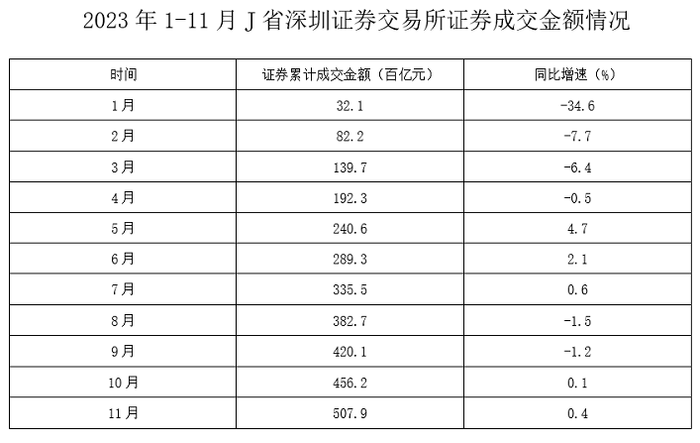
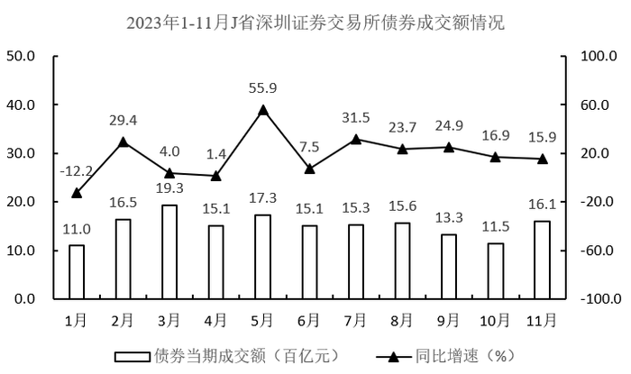
【选项】
A不到15%
B15%-20%
C20%-25%
D超过25%
听课笔记 / 决策路径：
【题目编号/题号】 ZL100 (165-2)书本第 165 166 页
【考点标签】 基期比重；综合资料
【材料】（无文本材料，见题干配图）
【题干】
2021年农村公路交通固定资产投资额占公路交通固定资产投资额的比重为（ ）。
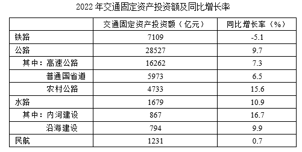
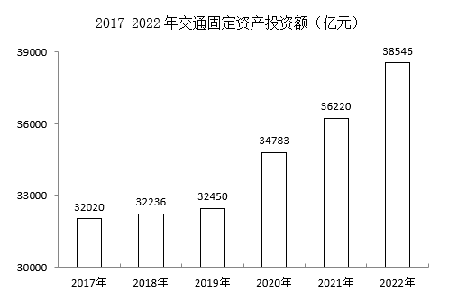
【选项】
A15.7%
B16.5%
C17.4%
D19.5%
听课笔记 / 决策路径：
【题目编号/题号】 ZL101 (170-19)书本第 169 170 页
【考点标签】 现期比重；综合资料
【材料】
2024年，中国化工新材料产业规模达到1655.6亿美元，居全球第一位。其次是美国，化工新材料产业规模 为1455.0亿美元。
【题干】
根据资料推算汇率换算，化工新材料产业结构中，2024年中国产业规模占全球比重超过70%的有几类？
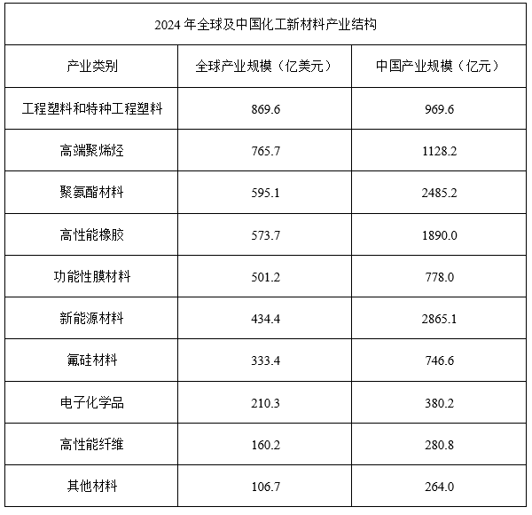
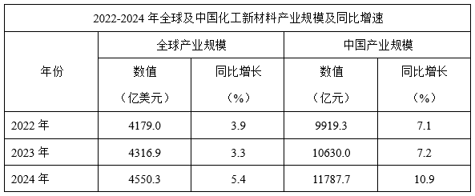
听课笔记 / 决策路径：
【题目编号/题号】 ZL103 (173-7)书本第 172 173 页
【考点标签】 现期比重；综合资料
【材料】
2024年有48.07%的家庭收入持平，22.01%的家庭收入增加，其中6.09%的家庭收入 明显增加；近三成被访者表示收入减少，其中11.23%的家庭明显减少。对于2025年的家庭收入，46.10%的居民 预计将基本持平，19.04%的居民预期收入将增加，23.28%的居民对未来收入变化不确定，11.58%的居民预期收 入将明显减少。 调查发现，47.01%的城乡居民日常购物以线上渠道为主，37.52%的城乡居民线上、线下并重，只有15.48% 的城乡居民明确表示以线下为主。 不同群体的购物选择存在较大差异：一是代际断层，年轻群体成为线上消费主力，其中00后群体线上购物 占比69.8%，比70后群体高了53.79个百分点；二是城乡分化，城镇居民的线上购物占比50.18%，高于农村居民 11.66个百分点，务农群体选择线上购物的占比比农村居民还要低19.74个百分点；三是学历分化，高学历群体 选择线上购物比例更高，硕士以上学历群体线上购物占比62.81%，远高于初中及以下学历群体的22.63%。
【题干】
已知2023年初我国人口为14.12亿，2025年初我国人口为14.08亿。根据调查分析的比例推测，2025年初我国更倾向于“只买必需品，多存点钱”的人数比2023年初：
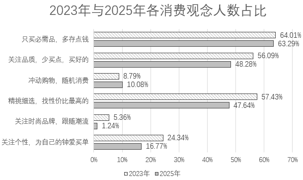
【选项】
A少不到0.1亿
B少0.1亿以上
C多不到0.1亿
D多0.1亿以上
听课笔记 / 决策路径：
【题目编号/题号】 ZL104 (173-9)书本第 172 173 页
【考点标签】 两集合容斥；现期比重；综合资料
【材料】（材料同上，见本组上一题）
【题干】
在参与调查的居民中，2024年家庭收入未减少且2025年预期收入将基本持平的家庭数量：
【选项】
A至少占16.18%
B至少占46.10%
C至多占16.18%
D至多占70.08%
听课笔记 / 决策路径：
【题目编号/题号】 ZL105 (175-13)书本第 174 175 页
【考点标签】 现期比重；综合资料
【材料】
2021年，广东省财政科学技术支出为982.76亿元，占当年全省财政一般公共预算支出的比重为5.4%。其 中，省本级财政科学技术支出为102.05亿元，占省本级财政一般公共预算支出的比重为6.6%，同比增加0.84个 百分点。珠江三角洲核心区财政科学技术支出845.09亿元，同比增长2.6%。
【题干】
2021年，广东省省本级财政一般公共预算支出在全省财政一般公共预算支出中的比重（ ）。
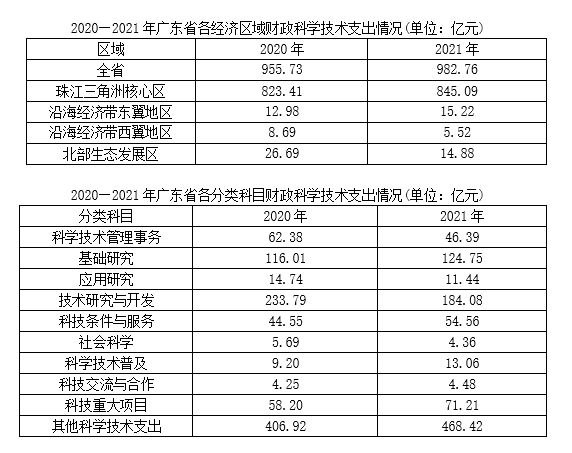
【选项】
A小于5%
B在5%~10%之间
C在10%~15%之间
D大于15%
听课笔记 / 决策路径：
【题目编号/题号】 ZL114 (190-20)书本第 189 190 页
【考点标签】 现期比重；综合资料
【材料】
截至2024年底，城乡居民基本医疗保险参保94713.73万人，收入11180.91亿元，支出10661.49亿元。
【题干】
以下折线图中，最能准确反映2016~2019年间，财政补助收入占城乡居民医疗保险收入比重变化趋势的是：
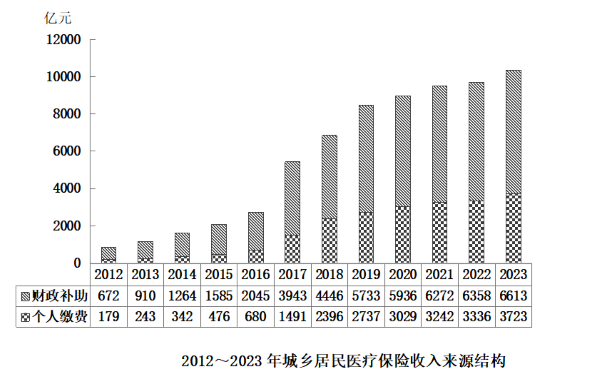
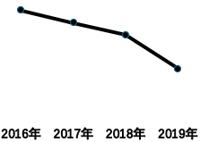
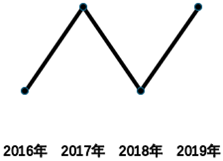
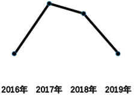
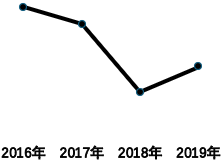
听课笔记 / 决策路径：
【题目编号/题号】 ZL121 (199-14)书本第 199 页
【考点标签】 现期比重；综合资料
【材料】（无文本材料，见题干配图）
【题干】
2019-2023年，北京、上海、广州、深圳4个城市五批次累计公示的专精特新“小巨人”企业数量之和约占全国总数的：
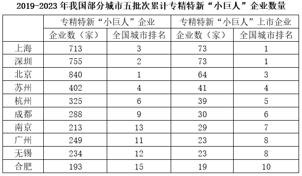
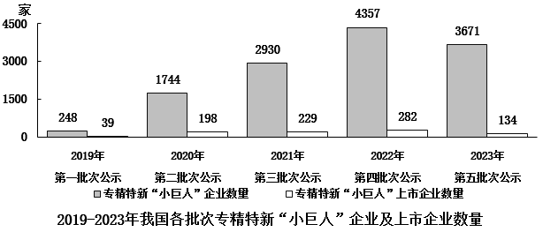
听课笔记 / 决策路径：
【题目编号/题号】 ZL127 (211-10)书本第 210 211 页
【考点标签】 现期比重；综合资料
【材料】
2019年12月31日，中国共产党党员总数为9191.6万名，同比增长1.46%。在党员的性别、民族和学历 上，女党员2559.9万名，少数民族党员680.3万名，大专及以上学历党员4661.5万名。在党员的入党时间上，新 中国成立前入党的17.4万名，新中国成立后至党的十一届三中全会前入党的1550.9万名，党的十一届三中全会 后至党的十八大前入党的6127.7万名，党的十八大以来入党的1495.6万名。在党员的职业上，工人（含工勤技 能人员）644.5万名，农牧渔民2556.1万名，企事业单位、社会组织专业技术人员1440.3万名，企事业单位、社 会组织管理人员1010.4万名，党政机关工作人员767.8万名，学生196.0万名，其他职业人员710.4万名，离退休 人员1866.1万名。 2019年共发展党员234.4万名，比上年增长14.06%。其中，发展女党员99.4万名，占42.4%；发展少数民族 党员23.6万名，占10.1%；发展35岁及以下党员188.3万名，占80.3%；发展具有大专及以上学历的党员106.8万 名，占45.6%。发展党员的职业上，工人（含工勤技能人员）14.3万名，企事业单位、社会组织专业技术人员 31.6万名，企事业单位、社会组织管理人员25.3万名，农牧渔民42.4万名，党政机关工作人员13.4万名，学生 84.4万名，其他职业人员22.9万名。
【题干】
以下折线图中，最能准确反映第10-14届CMC决赛人数占参赛人数比重变化趋势的是：
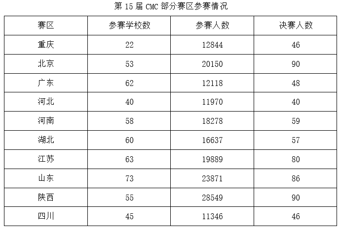
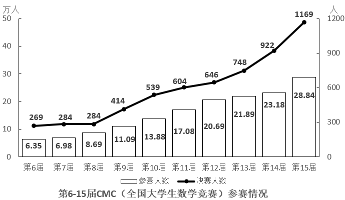
听课笔记 / 决策路径：
【题目编号/题号】 ZL130 (216-9)书本第 216 页
【考点标签】 现期比重；综合资料
【材料】
2023年，我国跨境电商进出口2.37万亿元人民币，比2022年（下同）增长15.3%，占同期我国货物贸易进出 口总值的5.7%，比重提升0.8个百分点。其中，出口约1.84万亿元，增长20.2%，占同期我国出口总值的7.7%， 进口约5335.2亿元，增长1.1%，占同期我国进口总值的3%。 从出口目的地看，美国（37.4%）、英国（8.7%）、德国（4.7%）、俄罗斯（4.6%）、法国（3.7%），合 计占出口总额近6成；泰国（2.5%）、越南（2.4%）、马来西亚（2.4%）、澳大利亚（2.1%）等新兴市场活 跃。美国（15.6%）、日本（13.5%）、澳大利亚（11.2%）、法国（7.9%）、韩国（7.2%）、新西兰（7%）、 德国（6.4%）、意大利（3.6%）、英国（3.4%）、荷兰（3.3%）是主要进口来源地。
【题干】
2023年，在跨境电商进出口贸易中，我国与下列哪个国家出现贸易逆差？
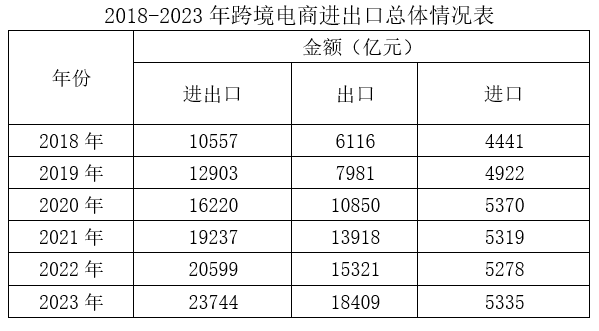
听课笔记 / 决策路径：
【题目编号/题号】 ZL134 (223-7)书本第 222 223 页
【考点标签】 两集合容斥；现期比重；综合资料
【材料】
2019年2月中下旬，某市统计局随机抽取2000名在该市居住半年以上的18～65周岁居民，就其2019年春节 期间的消费情况进行了调查。调查结果显示：与上年春节相比，28.3%的受访居民消费支出有所增加，58.0%的 受访居民消费支出基本持平。
【题干】
2019年春节期间有“餐饮消费”的受访居民中，一定有人：
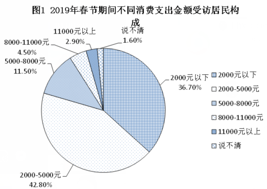
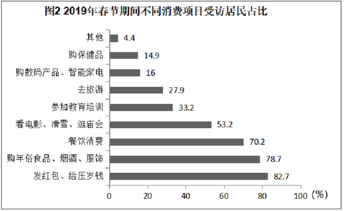
【选项】
A参加教育培训
B去旅游
C购保健产品
D购数码产品、智能家电
听课笔记 / 决策路径：
【题目编号/题号】 ZL135 (223-9)书本第 222 223 页
【考点标签】 现期比重；综合资料
【材料】（材料同上，见本组上一题）
【题干】
2019年春节期间消费支出在5000元以上的受访居民人数有可能是：
听课笔记 / 决策路径：
【题目编号/题号】 ZL143 (235-2)书本第 234 235 页
【考点标签】 两期比重/比值比较；综合资料
【材料】
2018年全球茶叶产量585.6万吨，同比增长约3%，中国茶叶产量261.6万吨，同比增长0.7万吨。2018年，中 国茶叶国内销售量为191万吨，同比增长5.1%，国内销售总额为2661亿元，出口量为36.5万吨，同比增长2.8%， 出口总额为17.89亿美元（合人民币120亿元），同比增长（？）。
【题干】
设中国茶叶国内销售量和出口量与当年中国茶叶产量的比值分别为x和y，则2018年的x和y值与2017年分别相比：
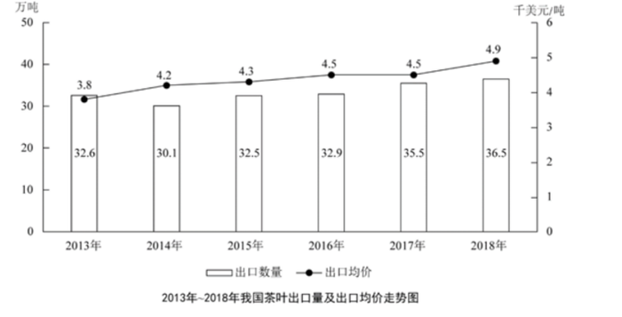
【选项】
A两者均下降
B两者均上升
C只有x值上升
D只有y值上升
听课笔记 / 决策路径：
【题目编号/题号】 ZL148 (243-10)书本第 241 242 243 页
【考点标签】 现期比重；综合资料
【材料】
2019年，1043.0万残疾儿童及持证 残疾人得到基本康复服务，其中包括0～6岁残疾儿童18.1万人。 截至2019年末，全国已竣工的各级残疾人综合服务设施2341个，总建设规模584.5万平方米，总投资183.1 亿元；已竣工各级残疾人康复设施1006个，总建设规模414.2万平方米，总投资132.2亿元。
【题干】
以下饼图中，最能准确反映2019年A市全市居民工资性收入（白色）、经营净收入（灰色）、财产净收入（黑色）和转移净收入（斜线）占可支配收入比重关系的是：
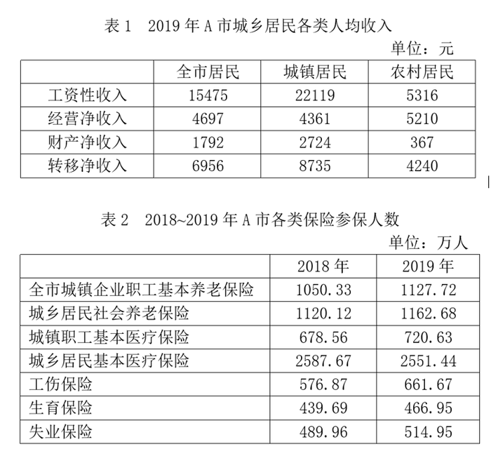
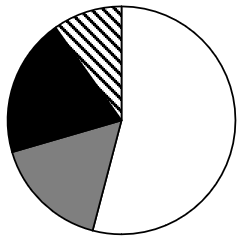
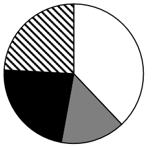
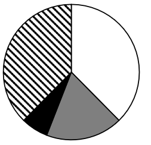
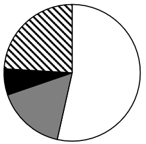
听课笔记 / 决策路径：
【题目编号/题号】 ZL157 (252-18)书本第 251 252 页
【考点标签】 现期比重；综合资料
【题干】
2022年，按体育场地类型的数量，从大到小排位第二的约占全国体育场地数量的：
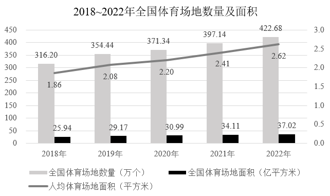
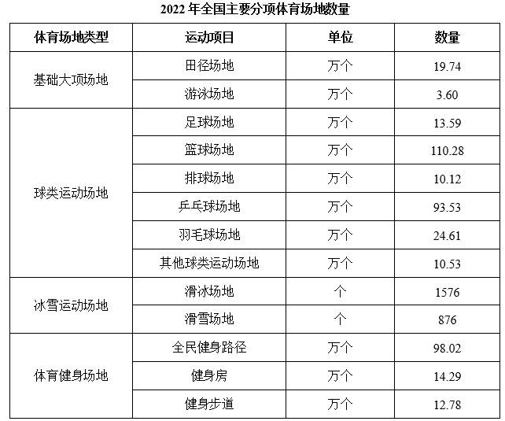
【选项】
A5.4%
B23.2%
C29.6%
D62.1%
听课笔记 / 决策路径：
【题目编号/题号】 ZL158 (252-19)书本第 251 252 页
【考点标签】 现期比重；综合资料
【材料】（无文本材料，见题干配图）
【题干】
2022年，按运动项目划分场地数量之和最接近全国体育场地数量25%的是：
【选项】
A游泳场地+全民健身路径
B健身步道+全民健身路径
C篮球场地+滑雪场地
D排球场地+乒乓球场地
听课笔记 / 决策路径：
【题目编号/题号】 ZL172 (266-2)书本第 265 266 页
【考点标签】 现期比重；综合资料
【材料】
2022年上半年，我国软件与信息技术服务业总收入同比增长10.9%，增速较1~5月份提高0.3个百分点。软件 与信息技术服务业收入中，软件产品收入、信息技术服务收入、信息安全收入、嵌入式系统软件收入同比分别 增长10.2%、12%、11.4%和5%。信息技术服务收入中，云计算、大数据服务收入4790亿元，同比增长9.3%；集 成电路设计收入1279亿元，同比增长15.2%。 2022年上半年，我国东部、中部、西部、东北地区完成软件与信息技术服务业总收入同比增速分别为 10.2%、14.4%、15.9%和6.3%。
【题干】
2022年上半年，我国东部地区信息技术服务收入在全国软件与信息技术服务业总收入中的占比在以下哪个范围内？
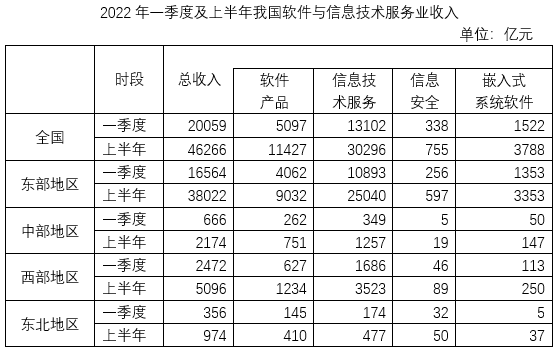
【选项】
A不到50%
B50%~60%之间
C60%~70%之间
D超过70%
听课笔记 / 决策路径：
【题目编号/题号】 ZL179 (271-19)书本第 270 271 页
【考点标签】 两期比重；综合资料
【材料】
2024年2月，我国公共充电桩数量为282.6万台，环比增加4.4万台，同比增长51.3%。其中直流充电桩123.9 万台，环比增长2.1%；交流充电桩158.6万台，环比增长1.2%。
【题干】
已知截至2024年2月广东公共充电桩数量同比增加17.2万台，则同期广东公共充电桩数量占全国比重同比：
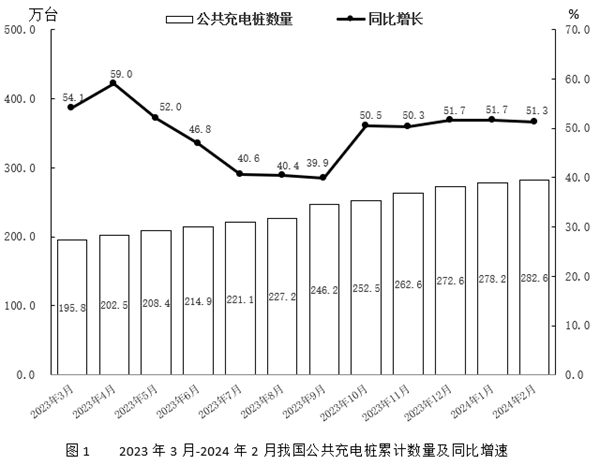
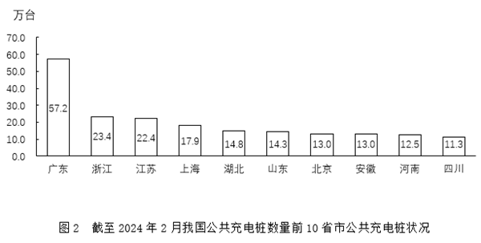
【选项】
A上升3个百分点以上
B上升不到3个百分点
C下降3个百分点以上
D下降不到3个百分点
听课笔记 / 决策路径：